Unit 2B - Mensuration - Solid Figures i.e. Cuboid, Cylinder, Sphere, Pyramid, Cone and Prism
1. (a) A cylinder A has base radius 3.5 cm and height 10 cm. Calculate the volume of A. (Take π to be .)
(b) A solid metal cylinder B has volume 216 cm3.
(i) Calculate the volume of a cylinder which has the same height as B but base radius twice that of B.
(ii) Given that the cylinder B is melted down and made into a cube, calculate the length of an edge of the cube.
2. A solid cylinder has radius 6 cm and height 9 cm. Taking π to be 3.142, calculate
(a) the curved surface area of the cylinder,
(b) the volume of the cylinder.
3. The diagram shows a right pyramid with a horizontal rectangular base ABCD and vertex V. The volume of the pyramid is 162 cm3 and the area of its base is 108 cm2.
(a) Calculate the height VX of the pyramid.
[Volume of pyramid = area of base × height]
(b) Given that AB : BC = 4 : 3 calculate the lengths of AB and BC.
(c) Using as much of the information below as is necessary, calculate .
[sin 48.6° = 0.75, cos 41.4° = 0.75, tan 36.9° = 0.75]
4. Figure I represents a vertical cross section of a rectangular tank which stands on a horizontal table represented by XY. The tank is 12 cm high, has a square base of side 20 cm and contains 3000 cm3 of water. Calculate
(a) the volume of the tank,
(b) the depth of the water.
The tank is now tilted about a base edge through C, so that some of the water spills out, until the position shown in Figure II is reached. Calculate
(c) the volume of water remaining in the tank,
(d) ,
(e) the vertical height of B above the table.
5. The diagram shows a metal container used in a paint factory. Both the base EFGH and the top ABCD are horizontal and rectangular. Each of the vertical sides ADHE and BCGF is a trapezium. The two sloping ends ABFE and DCGH are rectangular and are equally inclined to the horizontal. BC = AD = 2.4 m, FG = EH = 1.6 m, AB = DC = EF = HG = 1.2 m and the perpendicular height of ABCD above the base is 1.1 m.
Given that the container is full of paint, show that the volume of paint in the container is 2.64 m3.
Paint is sold in cylindrical tins of radius 3.8 cm and volume 400 cm3. Taking π to be 3.142, calculate the height of one of these tins.
Assuming that each tin is completely filled and that no paint is wasted, calculate the number of tins which can be filled from the 2.64 m3 of paint in the container.
A shopkeeper buys 50 tins of paint for $60.00 and marks each tin at the price which gives him 22 % profit. In addition, a customer has to pay 15% tax which is charged on the marked price. Calculate, correct to the nearest cent, the total amount the customer must pay for a tin of paint.
6. Taking π to be , calculate the radius of the base of a cylinder, given that its volume is 77 cm3 and its height is 8 cm.
7. The area of one face of a cube is 36 cm2. Find
(a) the volume of the cube,
(b) the total length of all its edges.
8. The figure shows the cross-section of a circular metal disc of radius 14 mm. The disc has a central hole which is a square of side 4 mm.
(a) Taking π to be , calculate
(i) the circumference of the disc,
(ii) the area, in mm2, shown shaded in the figure.
(b) Given that the thickness of the disc is 5 mm, calculate, in mm3, the volume of metal required to make 20 such discs.
9. A wooden post, of uniform cross-section, is 2 m 6 cm long. A piece of length 7.8 cm is sawn off.
(a) Write down the length in millimetres, of the sawn off piece.
(b) Calculate the length of the post remaining, giving your answer in centimetres correct to the nearest centimetre.
(c) Calculate the volume, in cm3, of the piece sawn off, given that the cross-sectional area is 5 cm2.
10. A reservoir, when full, contained 1.8 × 108 litres of water.
(a) During a period of dry weather, the volume of water in the reservoir was reduced by 1.2 × 106 litres each day until it was empty. Calculate the number of days supply the reservoir held when full.
(b) Find the volume of water in the reservoir when it was half full, giving your answer in standard form.
11. A model consists of a solid cone attached to a solid cylinder as shown in the diagram. The height of the cylinder is 23 cm and the area of its base is 120 cm2.
(a) Calculate the volume of the cylinder.
(b) Given that the volume of the cone is 600 cm3, calculate the height of the cone.
[Volume of cone = × area of base × height]
(c) Given that the model is made from material of density 0.4 g/cm3, calculate its mass.
[In parts (d) and (e), take π to be 3.142]
(d) Calculate the radius of the base of the cylinder.
(e) Taking the area of the curved surface of the cone to be 315 cm2, calculate the total surface area of the model, giving your answer correct to the nearest cm2.
12. A cylinder has height h and radius r. A sphere has the same radius r. Given that the volume of the cylinder is twice the volume of the sphere, calculate the numerical value of . (Volume of sphere = πr3.)
13. The solid triangular prism, shown in the diagram, stands on a horizontal rectangular base BCZY. The triangles ABC and XYZ are vertical and the faces ABYX and ACZX are rectangular.
(a) Given that AB = AC = 3 cm and BC = 4 cm, show that the height of A above the base is 2.236 cm.
(b) Using this height of 2.236 cm given that CZ = 5 cm, calculate, correct to 3 significant figures,
(i) the volume of the prism,
(ii) the total surface area of the prism.
(c) Calculate , where P is the mid-point of BY.
14. The diagram represents a solid block of wood of length 50 cm. The faces ABCD and EFGH are horizontal rectangles. The faces ABFE, BCGF and ADHE are vertical. BC = AD = 10 cm, BF = AE = 6 cm and FG = EH = 18 cm. Calculate
(a) CG,
(b) the volume of the block,
(c) the total surface area of the block.
15. The hollow metal tank shown in the diagram is used to store liquid fuel. The tank is constructed from a cylinder of radius 0.5 m and length 1.6 m with hemispheres of radius 0.5 m attached at each end. The axis of the cylinder is horizontal. The thickness of the metal may be neglected. In this question take π to be 3.142.
(a) Calculate
(i) the surface area of the outside of the fuel tank,
(ii) the cost of painting the outside of the tank, correct to the nearest cent, given that it costs 40¢ to paint one square metre.
(c) Calculate the volume of the tank,
(d) Calculate the area of the horizontal surface of the fuel when the tank is exactly half full.
[For a sphere of radius r: surface area = 4πr2; volume = πr3]
16. (a) Each edge of a metal cube is of length 2 cm. Find the total surface area of the cube.
(b) A rectangular box is completely filled with 20 identical metal cubes each having edges of length 2 cm.
(i) Calculate the internal volume of the box, giving your answer in cubic centimetres.
(ii) Given that the mass of the box is 1.5 kg and that the total mass of the box and the twenty cubes is 2.3 kg, calculate the mass of one of the cubes, giving your answer in grams.
17. A solid cylinder has a radius of 5 cm and a height of 8 cm. Taking π to be 3.142, calculate
(a) the volume of the cylinder,
(b) the total surface area of the cylinder.
18. The volume of a cone is 4880 cm3.
(a) Express this volume in standard form.
(b) Given that the area of the base of the cone is 160 cm2, find the height of the cone.
[Volume of cone = area of base × height]
19. The driveway to a house is made in the form of a block of concrete supported on a layer of stones.
(a) The layer of stones is a rectangular block 30 m long, 2.5 m wide and 20 cm thick. Find its volume in cubic metres.
(b) The concrete is a rectangular block 30 m long and 2.5 m wide. The volume of the concrete is 9 m3. Find the thickness of the block, expressing your answer in centimetres.
(c) The concrete consists of one part of cement and two parts of gravel. The cement costs $120 per cubic metre and the gravel $30 per cubic metre. Find the cost of the concrete.
(d) It was found that the cost of the concrete was 30% of the total cost of making the driveway. Find the total cost of making the driveway.
20. The volume of a cone is 2590 cm3.
(a) Express this volume correct to 2 significant figures.
(b) Given that the area of the base of the cone is 140 cm2, find the height of the cone.
[Volume of cone = area of base × height]
21. VABCD is a pyramid with a horizontal rectangular base ABCD. AC meets BD at N and VN is perpendicular to ABCD. Given that VN = 12 cm, AB = DC = 8 cm and AD = BC = 6 cm, calculate
(a) AC,
(b) AV,
(c) the volume of the pyramid.
[The volume of a pyramid = base area × perpendicular height]
22. An open rectangular tank of depth 50 cm has a horizontal base of length 80 cm and breadth 25 cm. A solid metal cylinder of volume 21 000 cm3 rests with its curved surface on the base of the tank as shown in Figure I. 39 000 cm3 of water is poured into the tank at a rate of 65 cm3/s.
(a) Calculate how many minutes it takes for all the water to be poured in.
(b) Given that the water just covers the cylinder as shown in Figure II, calculate
(i) the depth of the water,
(ii) the radius of the cylinder,
(iii) the length of the cylinder.
[Take π to be 3.142]
(c) The cylinder is now removed from the tank. Calculate by how much the water level falls.
23. (a) A farmer is building a fence 48 m long. He plans to put vertical posts at 3 m intervals with one at each end. How many posts will he need?
(b) Horizontal rails are to be fastened to the posts. The cross-section of each rail is a trapezium as shown in the diagram. The parallel sides of the trapezium are vertical and of length 10 cm and 7 cm. The lower side is horizontal and of length 6 cm. Calculate
(i) the area of the trapezium,
(ii) the volume, in cubic centimetres, of a 3 m length of rail.
(c) The fence is to be completed by fastening boards to the framework of posts and rails. Each board requires 4 nails which are sold in packets each containing 150 nails. Given that 350 boards are to be used, how many packets of nails should be purchased?
(d) The fence is to be painted with Woodinol. 1 litre of Woodinol covers 4 m2.
(i) Taking the fence to be a rectangle 48 m by 1.5 m, calculate the total area of the front and back.
(ii) Allowing an extra 10% of this area for the posts and rails, calculate the number of litres of Woodinol that will be required for the fence, giving your answer correct to the nearest litres.
24. Take π to be 3.142 in this question.
A simple instrument for measuring rainfall is shown in Diagram I. It is a cylindrical glass container which stands with its circular base horizontal. A scale is marked on it to show the depth of water that has fallen since it was last emptied. The radius of the container is 3 cm and its height is 20 cm.
(a) Calculate
(i) the area of the base of the container,
(ii) the area of the curved surface of the container.
(b) Calculate the volume of water in the container when the depth of water is 5.7 cm. A more accurate instrument for measuring rainfall is shown in Diagram II. It is made from a cylinder, also of height 20 cm and with horizontal base of radius 3 cm, together with a section of an inverted cone.
The top of the section of the cone is a horizontal circle of radius R cm. All the rain that falls within this circle is collected in the cylinder.
(c) Given that the area enclosed by the circle of radius R cm is 113 cm2, calculate
(i) the value of R,
(ii) the actual rainfall, in centimetres correct to 1 significant figure, if the depth of water in the cylinder is 12 cm.
25. Helen's mother made her a cake for her birthday. It was cylindrical in shape, had a diameter of 20 cm and a height of 8 cm.
(a) Taking π to be 3.142, calculate the volume of the cake, giving your answer correct to the nearest 10 cubic centimetres.
(b) Before the cake was baked it had a mass of 1.4 kilograms. It lost 10% of its mass through evaporation whilst it was being baked in the oven. Calculate the mass of the cake when it was taken out of the oven.
(c) At her party Helen and her four friends each ate one eighth of the cake but her brother Paul ate one fifth. Calculate the fraction of the cake that remained.
(d) Helen was 13 years old on her birthday and the average age of her four friends was 12 years 2 months. If the average age of all six children was 11 years 5 months, how old was her brother Paul?
26. The internal dimensions of a rectangular wooden box are 22 cm × 16 cm × 6 cm.
(a) When the lid is closed, calculate,
(i) the internal volume of the box,
(ii) the surface area of the inside of the box, giving your answer in square centimetres,
(iii) the number of cubes of side 2 cm which would completely fill the box,
(iv) the maximum number of cubes of side 3 cm which could be fitted inside the box.
(b) The external dimensions of the closed wooden box are 24 cm × 18 cm × 8 cm. Calculate the volume of wood used in making the box, giving your answer in cubic centimetres.
(c) Given that the mass of the empty box is 1.2 kg, calculate the density of the wood, giving your answer in grams per cubic centimetre.
27. The diagram represents a triangular prism in which three of the faces are rectangular. Given that BE = 30 cm, AB = 10 cm, AC = 8 cm and BÂC = 47°, use as much of the information given below as is necessary to calculate
(a) the area of ΔABC,
(b) the volume of the prism.
[sin 47° = 0.731, cos 47° = 0.682, tan 47° = 1.072]
(N90/1/16)
28. A solid metal cube has a volume of 125 cm3.
(a) Given that 1 cm3 of the metal has a mass of 9 grams, calculate the mass of the cube, expressing your answer in kilograms.
(b) Calculate
(i) the length of each edge of the cube,
(ii) the total surface area of the cube.
(c) The cube is melted down and made into a solid cylinder of length 6 cm. Calculate the radius of the cylinder. [Take π to be 3.142]
29. The diagram represents a triangular prism in which three of the faces are rectangular. Given that BE = 60 cm, AB = 8 cm, AC = 5 cm and BÂC = 50°, use as much of the information given below as is necessary to calculate
(a) the area of ΔABC,
(b) the volume of the prism.
[sin 50° = 0.766, cos 50° = 0.643]
30. The diagram illustrates a storage shed standing on a horizontal rectangular base EDST. The ends ABCDE and PQRST are vertical. The other four faces are rectangles. APTE and CRSD are vertical and ABQP is horizontal.
AB = PQ = 90 cm,
ED = TS = 120 cm,
AE = PT = 220 cm,
CD = RS = 180 cm,
AP = BQ = CR = DS = ET = 200 cm.
Calculate
(a) BC,
(b) the area of ABCDE,
(c) the volume, in cubic metres, of the shed.
31. A closed storage container consists of a cuboid, ABDEPQST, to which a quadrant of a cylinder, BCDQRS, is attached as shown in the diagram. AE = 20 cm, ED = 30 cm, DC = 20 cm and CR = 70 cm. Taking π to be 3.142, and giving each answer correct to 3 significant figures, calculate
(a) the area of the face ABCDE,
(b) the volume of the container,
(c) the length of the circular arc BC,
(d) the area of the curved surface BQRC,
(e) the total surface area of the outside of the container.
32. In this question take π to be 3.142. The volume of a sphere of radius r is πr3. The volume of a cone is base area × height. A child's toy is formed by joining the plane face of a solid hemisphere of radius 6 cm to the base of a solid cone of radius 6 cm, as shown in the diagram.
(a) Find the volume of the hemisphere.
(b) The volume of the cone is 408 cm3. Find its height.
(c) The hemisphere is made of a metal alloy which has a density of 1.1 grams per cubic centimetre. The cone is made of wood which has a density of 0.8 grams per cubic centimetre. Find the total mass of the toy.
(d) The hemispherical bases of a number of these toys are formed by melting down a solid cylinder of the alloy, of radius 8 cm and length 24 cm. Find the number of complete hemispheres that can be made from the cylinder.
33. In this question take the value of π to be 3.142. A fuel storage tank is a closed cylinder of radius 5 m and height 8 m. It is made of metal of negligible thickness, and stands with its base horizontal.
(a) The tank contains fuel to a depth of 3 m. Find, correct to the nearest cubic metre, the volume of fuel in the tank.
(b) 20 000 litres of fuel are added. Find to the nearest cm, the increase in depth of the fuel in the tank. (1 m3 = 1000 litres.)
(c) The outer curved surface and the top of the tank are to be painted. The paint is sold in tins, each of which contains 5 litres. One litre of paint covers 7 m2. Find the number of tins that should be bought.
(d) An identical tank is completely full. Fuel is removed from this tank by allowing it to flow through an outlet pipe. The inside diameter of this pipe is 10 cm and the fuel flows out at a constant speed of 3 metres per second. Find, correct to the nearest minute, the time taken to empty the tank.
34. ABCDLM is a wedge with a horizontal rectangular base ABCD. Rectangle ABML is vertical. AL = 5 cm, AD = 12 cm, and BD = 15 cm. Calculate
(a) the tangent of the angle of elevation of M from D,
(b) AB,
(c) the volume of the wedge.
35. In this question take π to be 3.142. A thin rectangular sheet of metal measuring 200 cm by 110 cm is bent to form half of the curved surface of a cylinder, as shown in Diagram 1.

(a) Show that the radius of the cylinder is 35 cm, correct to the nearest centimetre.
Semicircular ends are added to this curved sheet to make the water trough shown in Diagram 2.

(b) Calculate the total exterior surface area of the trough in square centimetres.
The trough is placed horizontally and water is poured into it.
Diagram 3 shows one of the semicircular ends and AB represents the level of the water.
The centre of the semi-circle is O and ∠AOB = 140°.
(c) Calculate
(i) the area, in square centimetres, of the sector OAB,
(ii) the area, in square centimetres, of the shaded segment,
(iii) the volume, in litres, of the water in the trough.
36. In a factory, waste liquid is poured into cylindrical drums. The cross-sectional area of each drum is 2000 cm2 and its height is 90 cm.
(a) Calculate the volume of each drum, giving your answer in cubic metres.
When full, the contents of the drums are emptied into a tank. Both the base of the tank, DCGH, and its top, ABFE, are horizontal rectangles. Each of the vertical sides ABCD and EFGH is a trapezium. AB = EF = 4.5 m, DC = HG = 3.5 m, AE = BF = CG = DH = 2 m and the perpendicular height of the tank is 1.5 m.
(b) Calculate
(i) the area of the trapezium ABCD,
(ii) the volume of the tank.
(c) How many full drums of waste can be emptied into the tank?
37. The base of a cylinder is horizontal and has a diameter of 10 mm. Some spherical drops of liquid, of diameter 2 mm, fall into the cylinder.
(a) Express as a multiple of π,
(i) the area, in square millimetres, of the base of the cylinder,
(ii) the volume, in cubic millimetres, of one drop of liquid.
[The volume of a sphere of radius r is 4/3πr3.]
(b) Given that the cylinder was initially empty, calculate the depth of liquid after 300 drops have fallen into it.
38. In this question either take the value of π to be 3.142 or use the value on your calculator. The shaded area in the diagram represents the part of the flat windscreen of a car which is being wiped by the windscreen wiper AB. The wiper rotates through 150° about O. OA = OA′ = 7 cm and AB = A′B′ = 35 cm. Calculate
(a) the length of the arc BB′,
(b) the ratio of the arc lengths, AA′ : BB′,
(c) the area of the screen which is wiped.
39. [The value of π is 3.142, correct to 3 decimal places.]
A Large Traffic Marker consists of a solid cone, of height 40 cm and radius 9 cm, with a solid cylindrical base of diameter 30 cm and thickness 2 cm.
(a) (i) Calculate the volume of the cone.
[Volume of a cone = 1/3πr2h.]
(ii) Calculate the total volume of the Marker.
(b) Every part of the surface of the Marker is painted orange.
(i) Calculate the slant height of the cone and hence the area of the painted part of the cone. [Curved surface area of a cone = πrl, where l is the slant height.]
(ii) Calculate the area of the painted part of the base.
(c) A Small Traffic Marker is geometrically similar to a Large one, and the diameter of its base is 15 cm.
(i) Write down the ratio of the volume of a Small Marker to that of a Large Marker.
(ii) Hence calculate the volume of a Smaller Marker.
40. Correct to the nearest metre, a rectangular lawn is 22 m long and 8 m wide. Find
(a) the least possible length of the lawn,
(b) the upper bound of the perimeter of the lawn.
41. [The value of π is 3.142 correct to 3 decimal places. The volume of a cone = 1/3πr2h.]
A container in a chemical factory is made by joining together a cylinder of radius 3 m and a cone with a base of radius 3 m as shown in Diagram 1.
The height of the cylinder is 2.4 m. The point O is the centre of the base of the cone.
(a) Calculate the volume of the cylinder.
(b) Given that the total volume of the container is 115 m3, show that the height of the cone is 5.00 m, correct to two decimal places.
The container rests on a horizontal floor. Diagram 2 shows the vertical cross-section of the container through the vertex, A, of the cone.
The container is partly filled with liquid through a small hole near the top.
The surface of the liquid is represented by BD which is 3.5 m below A.
(c) Calculate the length of BD.
(d) Calculate
(i) the volume of the empty space above the liquid,
(ii) the volume of liquid in the container.
42. (a) [The curved surface area of a cone of radius r and slant height l is πrl.] The diameter of the base of a cone is 16 cm. (See Diagram 1)
Given that the slant height of the cone is 10 cm, calculate
(i) the curved surface area of the cone, leaving your answer as a multiple of π,
(ii) the height of the cone.
(b) [The value of π is 3.142 correct to three decimal places.]
Diagram 2 shows a cylindrical vessel resting on a horizontal surface. The vessel, which has radius 6 cm and length 20 cm, contains liquid to a depth of 9 cm. Calculate the volume, in cubic centimetres, of liquid in the vessel.
43. [The value of π is 3.142 correct to three decimal places.]
Diagram I shows a barn and Diagram II shows the cross-section of its end.
A farmer needs to order a new roof for his barn. The roof is represented by ABC, the arc of a circle of radius r, centre O. ACDE is a rectangle. The farmer measures AC, CD, BF and the length of the barn.
(a) Given that AC = 8 m and BF = 2 m,
(i) write down an expression, in terms of r, for the length of OF,
(ii) show that the radius, r, of the circle is 5 metres.
(b) Show that angle AOC is approximately 106°.
(c) Given that the length of the barn is 12 metres, calculate the curved area of the roof (shaded in Diagram I).
(d) Given also that CD = 7 metres, calculate the volume of the barn.
44. The diagram, which shows the sector AOB of a circle, represents a piece of card. The radius of the sector is 24 cm and the angle AOB is 120°. The card is used to make a hollow cone by joining the edges OA and OB. Calculate the radius of the base of the cone.
45. The volume of a rectangular block of candle wax is 375 cm3. It has a length of 20 cm and a width of 7.5 cm.
(a) Calculate
(i) the height of the block,
(ii) the number of these blocks that can be packed into a box whose internal dimensions are 100 cm by 15 cm by 10 cm.
The block is melted down and 125 cm3 of the wax is poured into each of three separate moulds. The first mould is a cube, the second a cylinder of height 12 cm, and the third a pyramid with a square base of side x cm and height 2x cm.
[The volume of a pyramid = 1/3 × area of the base × height.]
[The value of π is 3.142 correct to 3 decimal places.]
(b) Calculate
(i) the length of the edge of the cube,
(ii) the radius of the cylinder,
(iii) the value of x.
(c) The pyramid is melted down. The wax is used to make a number of pyramid candles, geometrically similar to the original pyramid, but with with half its height. How many of these smaller pyramid candles can be made?
(d) It can be assumed that the wax burns at the same rate throughout the lives of the candles. [This means that the volume of wax burned in a given time is the same for all candle shapes.] The cube burns down to three-quarters of its original height in 20 minutes. Find the height of the cylinder after it has been burning for 30 minutes.
46. [The value of π is 3.14 correct to 2 decimal places.]
The inside radius of a cylindrical pot is 20 cm. It contains water to a depth of 10 cm. Calculate, in cubic centimetres, the volume of water in the pot.
(N98/1/20a)
47. [The value of π is 3.14 correct to 2 decimal places.]
Two identical cylindrical containers have an inner radius of 10 cm.
(a) Milk is poured into the first container to a depth of 5 cm. Calculate the volume of milk in this container, giving your answer in cubic centimetres.
(b) There are 4 litres of milk in the second container. Calculate, correct to the nearest centimetre, the depth of milk in this container.
48. [The value of π is 3.142 correct to 3 decimal places.]
A well is a vertical open cylinder of radius 1.2 m and height 5 m. The well contains water to a depth of 3 m.
(a) Calculate the total internal area of the curved surface of the well and the bottom of the well.
(b) Calculate the volume, in litres, of water in the well. [1 m3 = 1000 litres]
(c) 270 litres of water is removed from the well. Calculate, correct to the nearest centimetre, the resulting fall in the water level.
49. (a) The volume of a cube is 200 cubic centimetres. Find the length of an edge of the cube, correct to the nearest centimetre.
(b) The volume of a sphere of radius r is 4/3πr3. Find, correct to one significant figure, the volume of a sphere with radius 10 cm.
50. [The value of π is 3.142 correct to three decimal places]
Earth is excavated to make a railway tunnel. The tunnel is a cylinder of radius 5 m and length 450 m.
(a) Calculate the volume of earth removed.
A level surface is laid inside the tunnel to carry the railway lines. The diagram shows the circular cross-section of the tunnel. The level surface is represented by AB, the centre of the circle is O and angle AOB = 90°. The space below AB is filled with rubble.
(b) Calculate
(i) the area of triangle AOB,
(ii) the volume of rubble used in the 450 m length of tunnel.
(c) Steel girders are erected above the tracks to strengthen the tunnel. Some of these are shown in the diagram above. The girders are erected at 6 m intervals along the length of the tunnel, with one at each end.

(i) How many girders are erected?
(ii) Calculate the length of each girder.
(iii) Calculate the total length of steel required in the 450 m length of tunnel.
51. [The value of π is 3.142, correct to three decimal places.]
[1 litre = 1000 cm3.]
Some identical bowls are open cylinders each of radius 6 cm and height 4 cm.
Each bowl is made from thin metal.
(a) Calculate the area of metal needed to make each bowl, giving your answer correct to the nearest square centimetre.
(b) A hemispherical pan contained 13 litres of soup. As many bowls as possible are completely filled with soup from the pan.
(i) Calculate the number of bowls which are filled.
(ii) Calculate the volume of soup which is left in the pan, giving your answer in cubic centimetres.
(iii) [The volume of a sphere of radius r is 4/3πr3.]
It is given that 13 litres of soup completely filled the pan. Calculate the radius of the hemisphere, giving your answer correct to the nearest millimetre.
(c) Michael has two different bowls, which are geometrically similar to each other. The heights of the bowls are in the ratio 2 : 3.
Write down the ratio of the volumes of soup these bowls hold when full.
52. A rectangular block of wood has dimensions 24 cm by 9 cm by 7 cm. It is cut up into children's bricks. Each brick is a cube of side 3 cm.
(a) Find the largest number of bricks that can be cut from the block.
(b) Find the volume of wood that is left.
53. A rectangular block of wood has dimensions 20 cm by 13 cm by 8 cm. It is cut up into children's bricks. Each brick is a cube of side 4 cm.
(a) Find the largest number of bricks that can be cut from the block.
(b) Find the volume of wood that is left.
54. [The value of π is 3.142, correct to three decimal places.]
[The volume of a sphere is 4/3πr3.]
Sarah makes biscuits. The amount of mixture required to make one biscuit is 18 cm3. Before it is cooked, the mixture is rolled into a sphere.
(a) Calculate the radius of the sphere.
After it is cooked, the biscuit becomes a cylinder of radius 3 cm and height 0.7 cm. The increase in volume is due to air being trapped in the biscuit.
(b) (i) Calculate the volume of air contained in a biscuit.
(ii) Express this volume of air as a percentage of the total volume of the mixture.
The biscuits are packed in a box. The cross-section of the box is a regular hexagon, containing 7 biscuits, arranged as shown in Diagram 1.
Three of the biscuits are shown in Diagram II. O is the centre of the hexagon and of the middle biscuit. B is the point where two biscuits touch. A and C are the centres of two biscuits. E is the midpoint of the side DF of the box.
(c) (i) Calculate the length OB,
(ii) State the length OE.
(iii) By considering similar triangles, or otherwise, calculate the length of a side of the box.
55. [The value of π is 3.142 correct to three decimal places.]
A water tank, shown in Diagram I, is a circular cylinder of radius 24 cm and height 125 cm. It is open at one end and full of water.
(a) Calculate
(i) the volume, in litres, of water in the tank,
(ii) the total area, in square metres, of the outside of the open tank.
(b) Diagram II shows a rectangular trough of length 150 cm and width 20 cm. The trough was completely filled with 48 000 cm3 of water from the tank. Calculate the depth of the trough.
(c) After the trough had been filled, water started to leak from the tank. In 2 hours 30 minutes it was found that 20 000 cm3 ran out of the tank. Calculate the rate at which the level of water in the tank was falling. Express your answer in centimetres per hour.